Power Electronics · Power Systems · Converter-Dominated Grids
5
IEEE Transactions papers and manuscripts spanning smart grid, power electronics, and industry
applications
8
conference papers across KIPE and ICPE on inverter control, synchronization, and harmonic
compensation
3 Years
industrial R&D experience in South Korea on converter hardware, control, and experimental
validation
3
high-power converter platforms designed, including 5 kW and 10 kW systems with hardware and
controller development
15
peer reviews across IEEE Transactions on Industrial Electronics, Power Electronics, Smart Grid,
and IAS Publications
Building resilient control, power-quality, and stability solutions for converter-dominated power grids.
I am Muhammad Noman Ashraf, PhD in Electrical Engineering based in Abu Dhabi. My work spans nonlinear oscillator-based synchronization, harmonic compensation, grid-forming control, and the stability of converter-dominated power systems, alongside the hardware realization of grid-connected inverter platforms for modern renewable networks.
- PhD research on VO-PLL, VO-HC, grid-forming control, and inter-converter oscillation mitigation.
- Three years of industrial R&D in South Korea on inverter and bidirectional converter development.
- Hands-on experience in TI DSP implementation, PCB design, prototyping, and experimental validation.
Research Themes
What I work on
My research connects converter hardware, control theory, and stability questions in future power systems.
Weak-grid synchronization
I develop nonlinear oscillator-based synchronization methods for grid-connected inverters operating under weak, distorted, and harmonically polluted network conditions.
Power quality enhancement
My work on harmonic extraction and compensation aims to reduce current distortion substantially while preserving robust dynamic behavior and implementation simplicity.
Grid-forming stability
I study inter-converter oscillations in converter-dominated power systems and propose energy-based damping and control strategies for stable multi-converter operation.
Future power grids
My broader research direction links converter control, power quality, and stability support in renewable-heavy, low-inertia, converter-dominated power grids.
From synchronization to system-level resilience
My doctoral work at Khalifa University centers on power quality enhancement for grid-connected inverters in renewable energy systems. I developed a virtual-oscillator-based PLL using Andronov-Hopf dynamics and proposed a companion harmonic compensation method that acts as a nonlinear adaptive filter. These contributions are supported by experimental validation and tied to a broader control perspective that bridges grid-following and grid-forming operation in future converter-dominated power grids.
Before my PhD, I spent three years in industrial R&D at OKY Ltd. in South Korea, where I led hardware and firmware development for bidirectional power converters, dynamic voltage compensators, and fast sag-response inverter systems. That experience keeps my academic work grounded in implementation reality.
Selected Work
Explore all projects
Selected projects
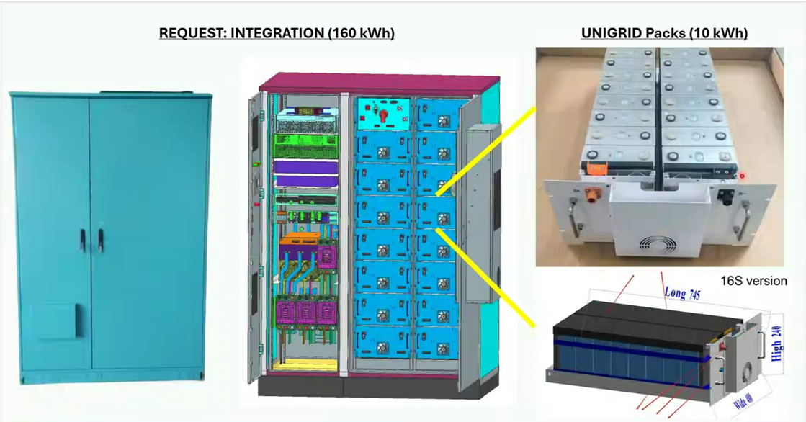
UNIGRID sodium-ion BESS integration
Leading a current Khalifa University project on cabinet-scale sodium-ion BESS integration, spanning power conversion, grid integration, control-system design, communications, and validation.
Current Project
BESS
Grid Integration

10 kW transformerless DVC at OKY
Developed a three-phase transformerless dynamic voltage compensator at OKY with a bidirectional supercapacitor-fed DC-DC stage, inverter module, and complete hardware and controller design responsibility.
OKY
DVC
25-50 V to 400 V

D2 Series DVC firmware modernization
Updated firmware across a single-phase DVC product family at OKY, tuning current controllers by product rating, tracking firmware versions, supporting production installation, debugging returned units, and reducing overshoot during fast sag-compensation response.
Firmware
D2 Series
Controller Tuning
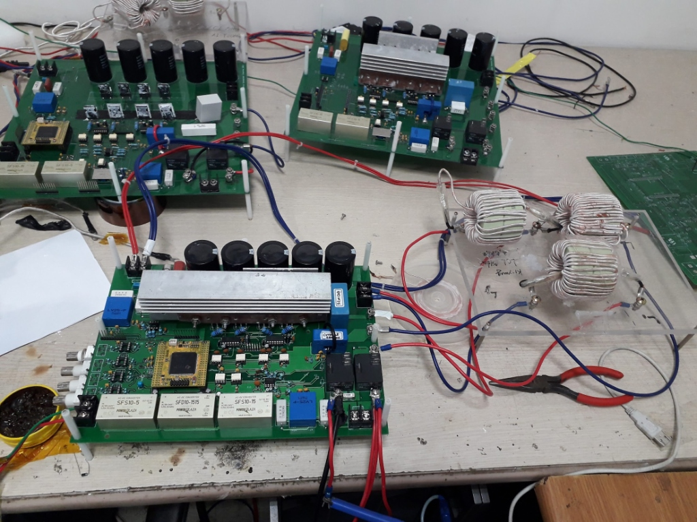
5 kW inverter design during MSc
Designed and tested a 5 kW bidirectional inverter system during my MSc at Soongsil University, covering bidirectional operation, current control, MPPT, and AC/DC microgrid validation.
MSc Work
5 kW Inverter
AC/DC Microgrid
In Action
Presenting research and working in the lab
A few moments from conference presentations, poster sessions, and experimental work.
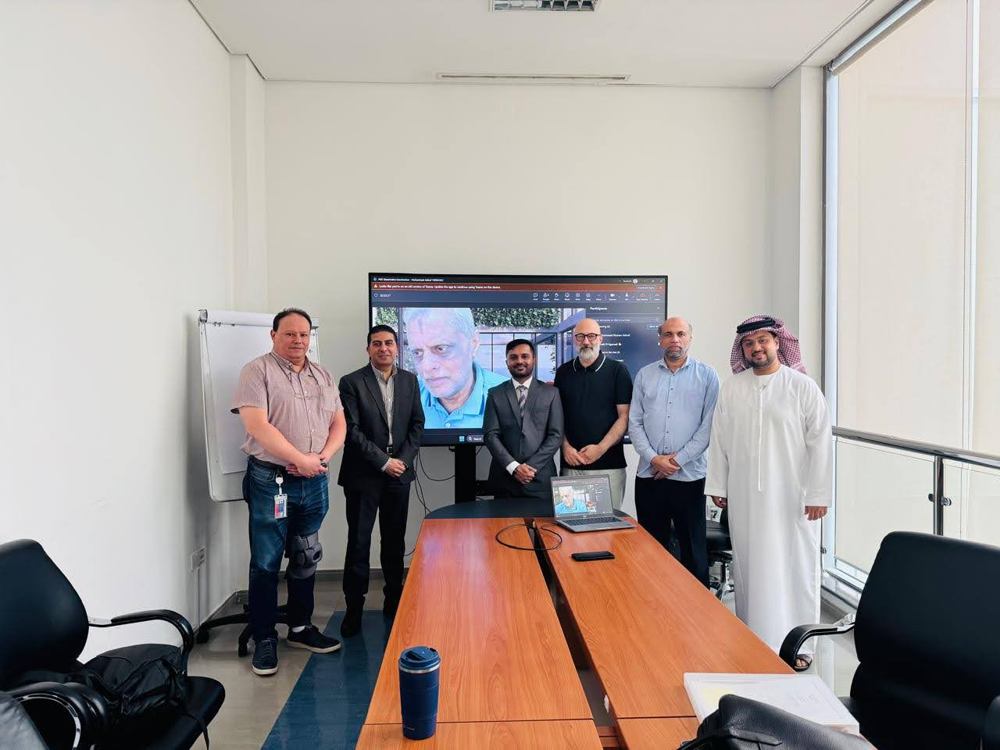

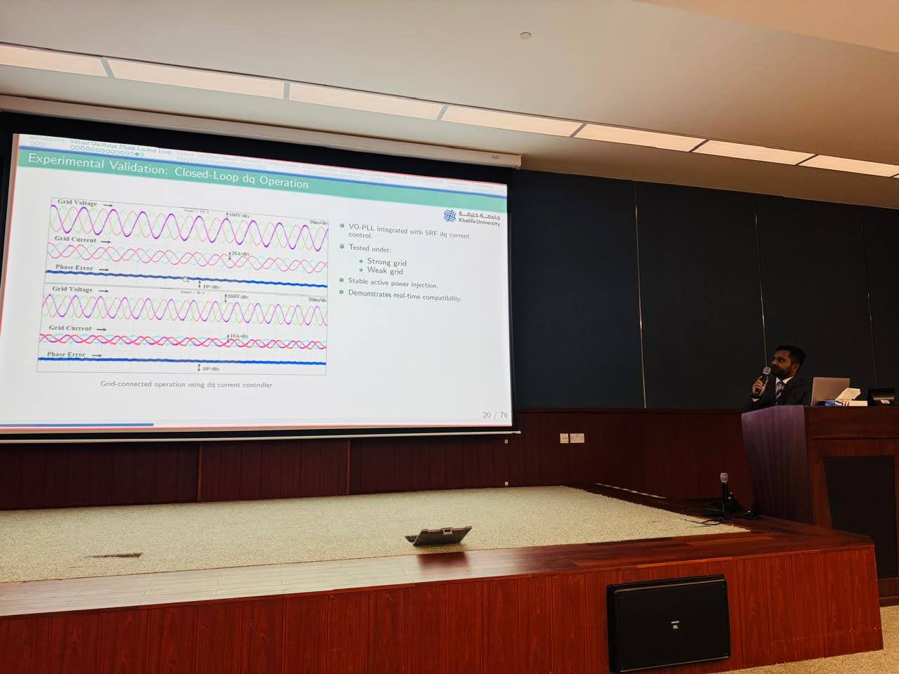
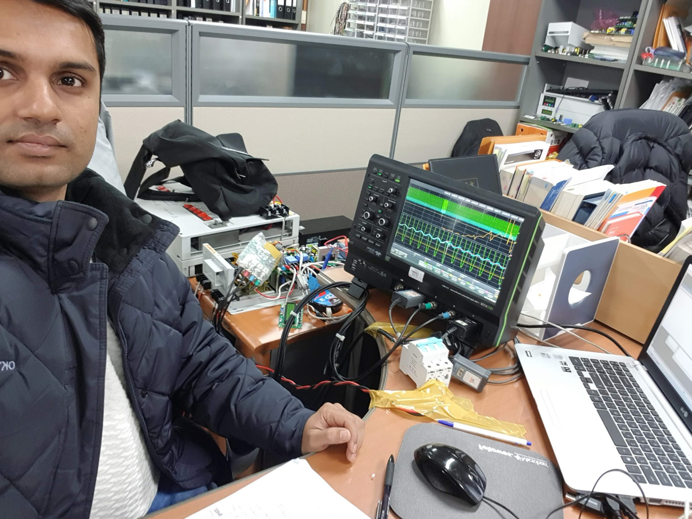
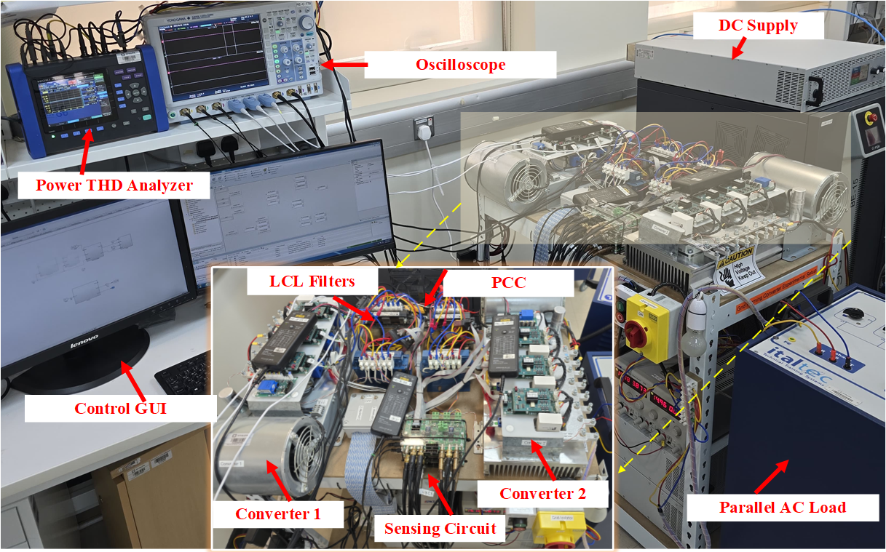

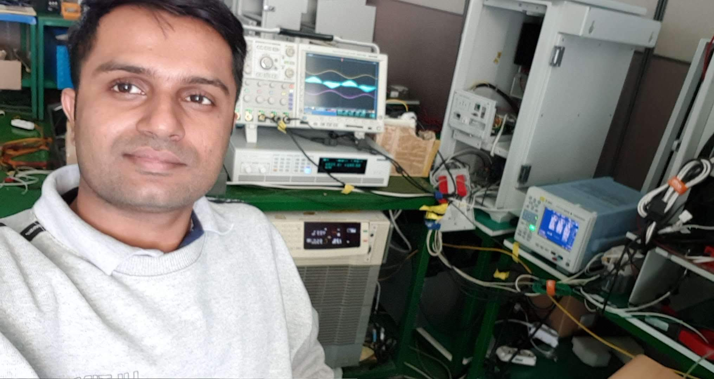

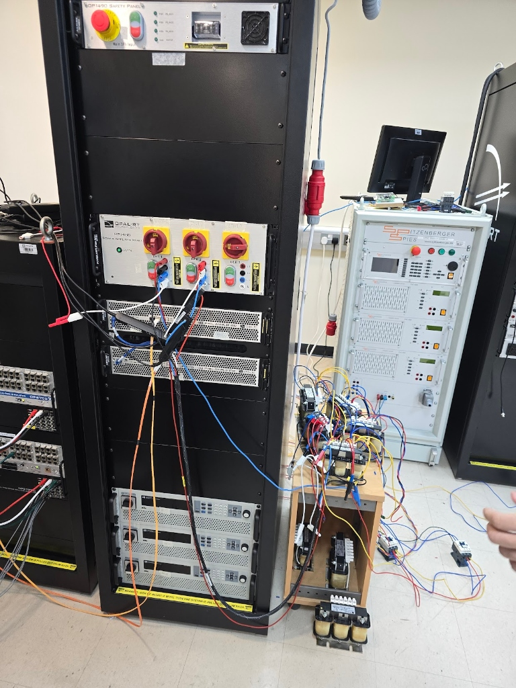
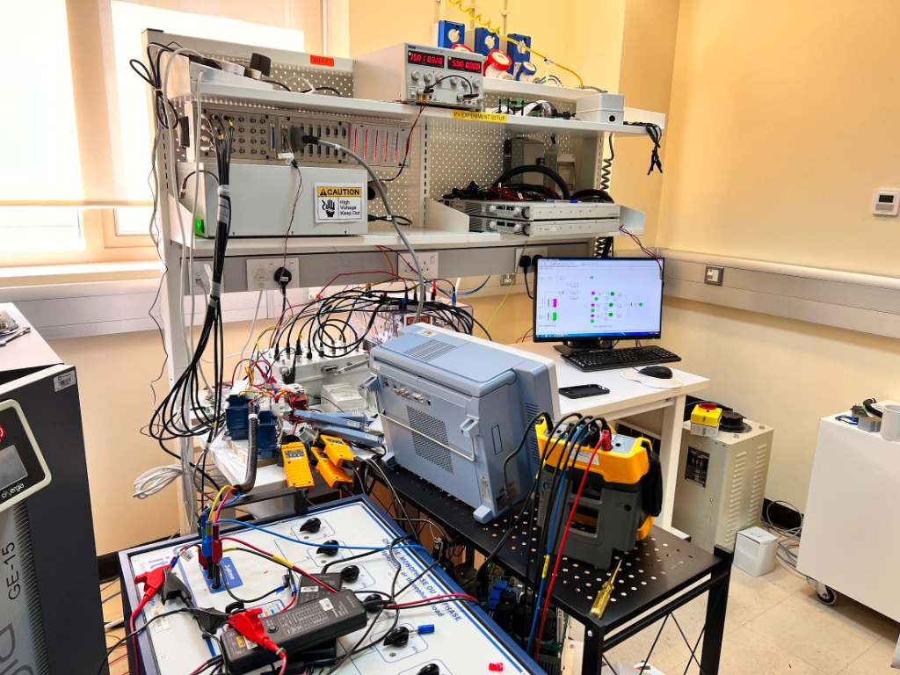
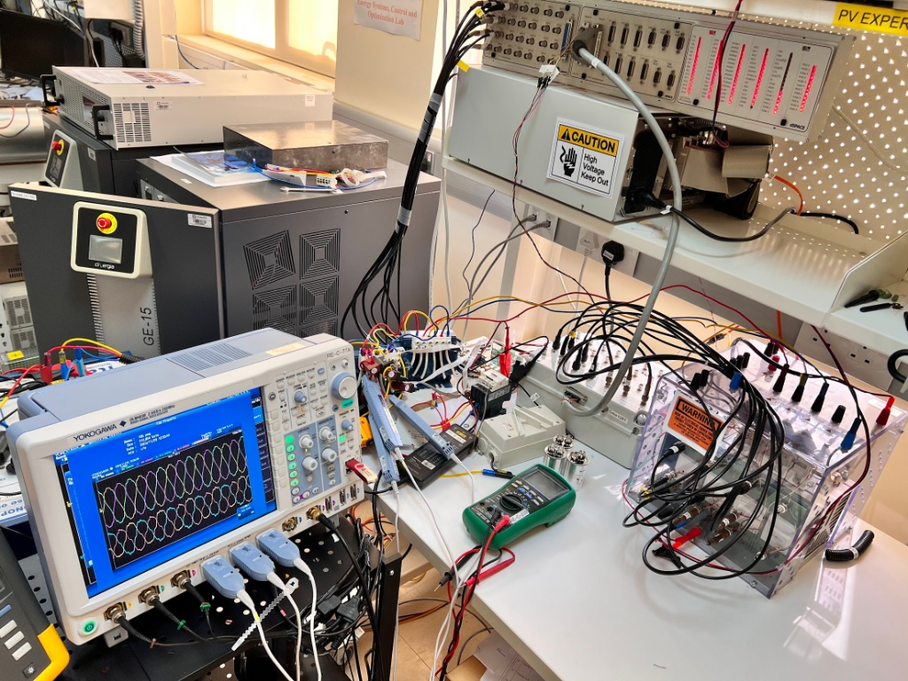
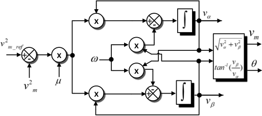
Virtual oscillator based PLL architecture
Control architecture from my oscillator-based synchronization research, showing the structure behind the VO-PLL design used for distorted-grid and weak-grid synchronization.
Project and publication material documenting the research path
My project and publication material document the progression from MSc work in power electronics and inverter control to PhD research on synchronization, harmonic compensation, and converter-dominated power-system stability.
Together, these materials show both the technical depth of the work and the continuity between early experimental platforms and the current research direction.

10 kW transformerless DVC development
This project centered on a 10 kW three-phase dynamic voltage compensator built around a 25-50 V supercapacitor interface, a bidirectional two-stage DC-DC converter, and a 400 V inverter stage for fast sag-response operation.
It also highlights the engineering reality of the work: 400 A low-voltage current handling, thermal and gate-driver constraints, sensing noise, firmware complexity, and the redesign path toward a more production-ready platform.
Laboratory Systems
Research platforms and experimental validation
A large part of my work is grounded in converter hardware, control implementation, and measured results.
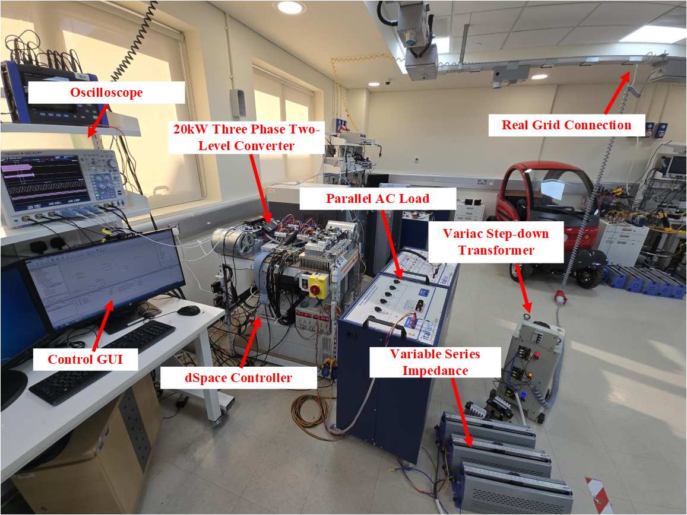
Publications
Full publication list
Recent and representative publications
IEEE Transactions on Smart Grid · Early Access
Andronov-Hopf Oscillator Based Harmonic Elimination Scheme for Grid-Connected Inverters
IEEE Transactions on Power Electronics · 2025
Andronov-Hopf Oscillator-Based Phase-Locked Loop for Three-Phase Grid Connected Inverters
IEEE Transactions on Industrial Electronics · 2021
A Novel Selective Harmonic Compensation Method for Single-Phase Grid-Connected Inverters
Journal of Power Electronics · 2020
A New Harmonic Compensation Method Based on Digital Lock-In Amplifiers for Grid-Connected Inverters
Teaching and Collaboration
Open to research collaborations, academic conversations, and technically grounded engineering work.
I teach undergraduate laboratory courses in communication systems, instrumentation and measurement, and electric circuits, and I enjoy work that connects theory, experiments, and practical design.